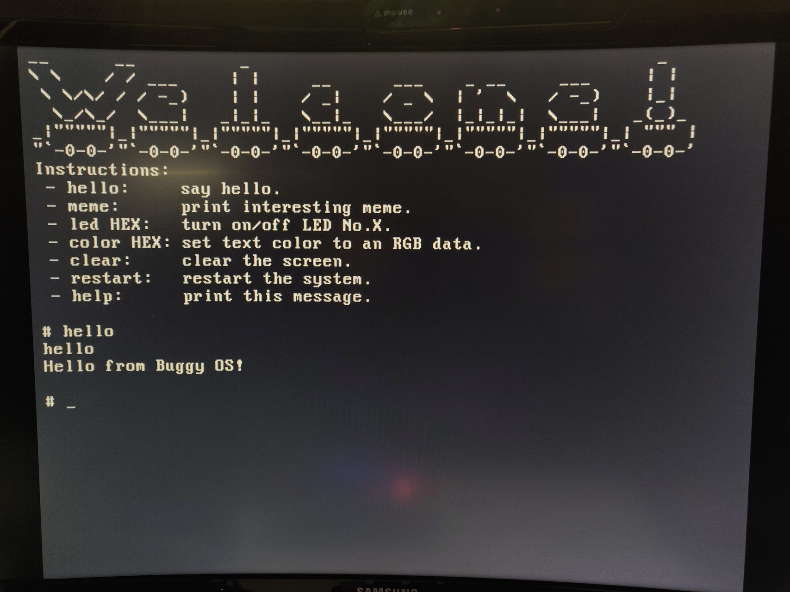
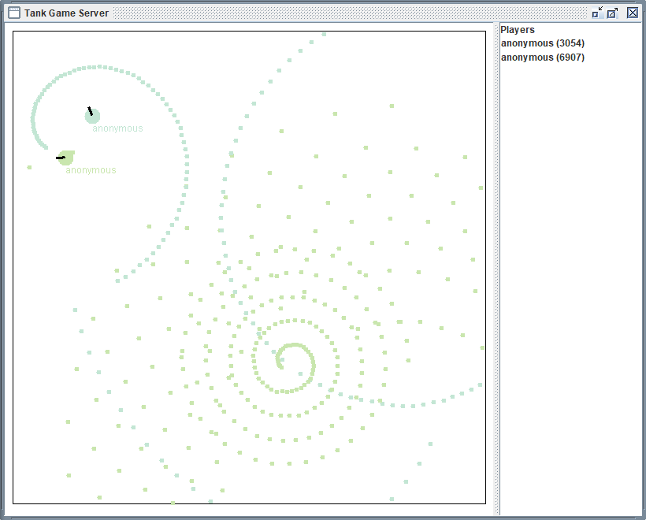
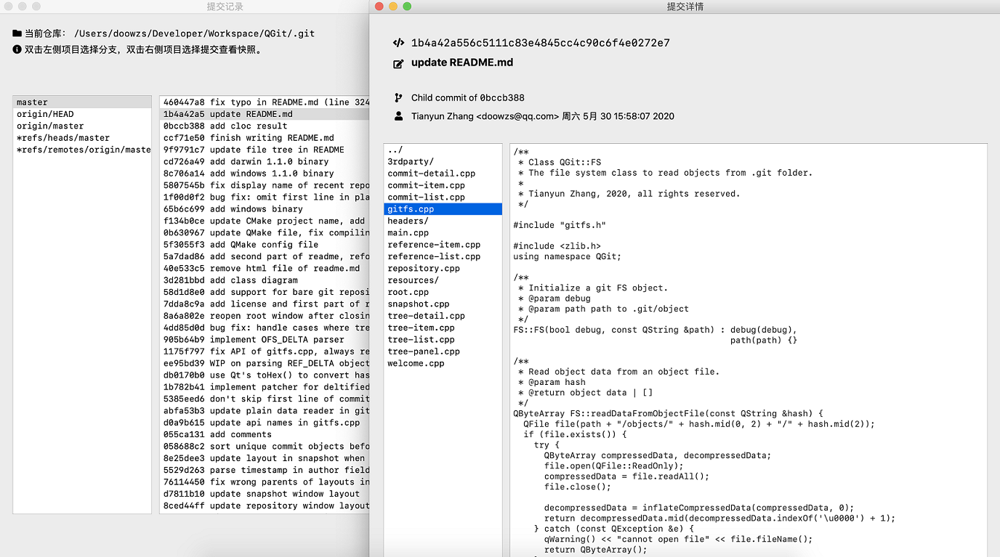
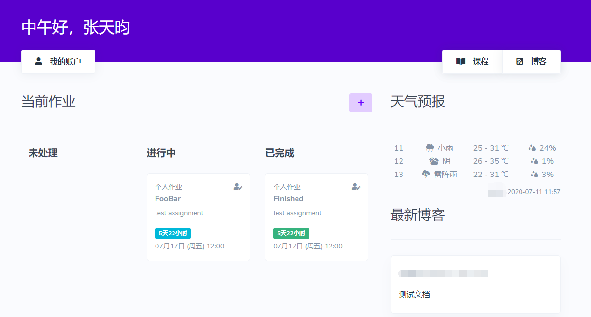

Tianyun Zhang 张天昀
Who is Tianyun?
I am a senior undergraduate from Nanjing University, majoring in Computer Science and Technology. I learn a wide range of tach stacks and currently my favourites are .NET Core and Golang.
I am an otaku and a game lover. I am fascinated by the popular MMO FFXIV and I 'live' in Chocobo (CN server), with WHM and AST being my favourite jobs.
What did Tianyun make?
Buggy OS (Course Project, 2018)
Implementation of basic instructions of MIPS architecture and a simple CPU. It supports PS/2 input and VGA output, with a single shell written directly in assembly to play with.

Tank Game (Course Project, 2019)
A multiplayer GUI game written in Java. Multiple players can share a screen and each player interacts with its tank using an Android phone. The client sends input to server and read game state from server using raw TCP socket.

QGit (Course Project, 2020)
An Qt-based GUI program to read Git repositories and checkout snapshots of commits. The project implements parsing Git internal storage without using a Git library.

JB-Online (Personal Project, since August 2018)
An online assignment tracker built with Laravel framework. The application provides functionalities such as recording course or personal deadlines and sharing blog posts with classmates.
Blog posts are constructed using a traditional MVC architecture, while other parts are implemented in MVVM pattern with VueJS. The kanban on the homepage works smoothly and forms a workflow for eliminating deadlines.
